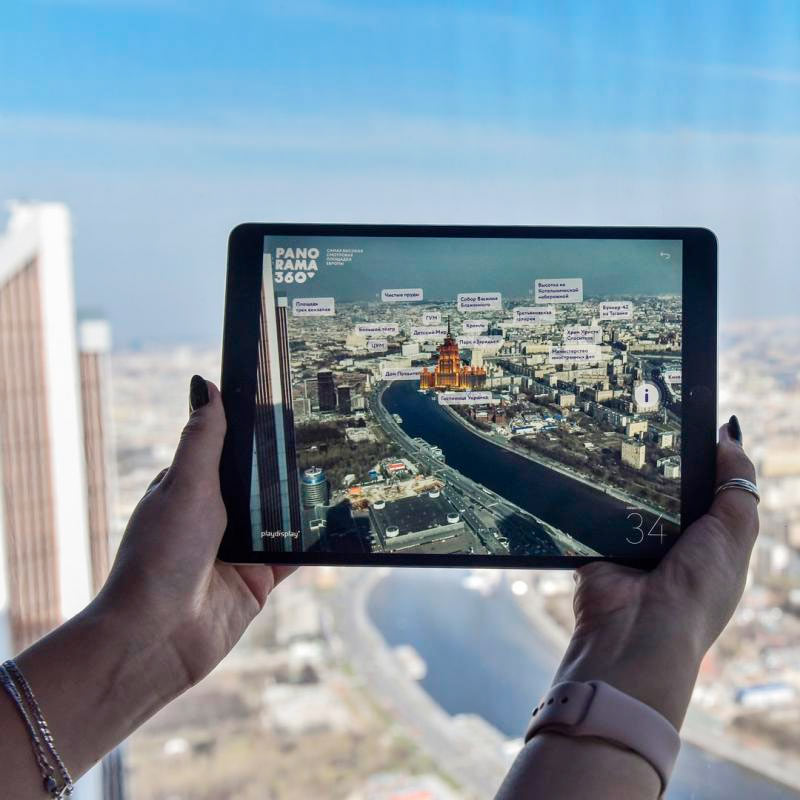
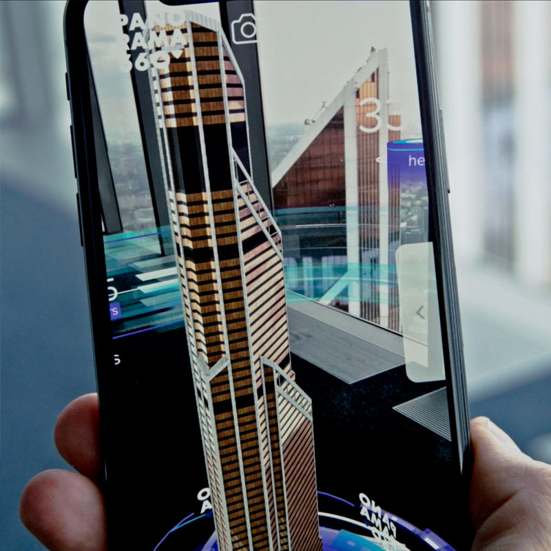

Panorama 360
Mobile guide in augmented reality
The goal
Give visitors to one of Europe’s highest observation decks — Panorama 360, on the 89th floor of the Federation Tower in Moscow City — a new way to read the city.
The solution
We built a guide in augmented reality. Point a tablet at the panorama beyond the window and markers appear above the city, pinned to its landmarks. Tap one and its story opens: archive and present-day photographs, panoramas and an audio narration in Russian, English and Chinese. Moscow’s landmark buildings and places, historical and contemporary, unfold right on top of the real view.
The project ran in four stages
- Prototyping the tracking of the city panorama
- Designing the app concept around the intended user experience
- Modeling, animation, interface design, programming, building the app
- Testing and debugging the project, publishing the iOS and Android apps
Two apps run on the deck
[1] The guide in augmented reality reacts to the view beyond the window and shows information about the landmarks of Moscow.

[2] Twelve illuminated AR markers are set around the deck: point a device at one and a 3D model of a Moscow City skyscraper grows on the screen, with information about it.

Outcome
- 200,000+ downloads of the AR Moscow City app
- 12 Moscow City landmarks in AR
Augmented reality turned one of Moscow’s main observation decks from a viewpoint into an interactive way of exploring the city. A digital layer tied the real panorama to the capital’s architecture and history, and a separate AR exhibition let visitors get to know 12 landmarks of the Moscow City district.
The AR Moscow City app passed 200,000 downloads and kept receiving updates years after launch. The digital part became not a one-off installation but a long-lived PANORAMA360 service — clear to Russian and international visitors alike, and widening the very experience of getting to know Moscow.
Part of: Museum equipment · Multimedia space
Open the interactive version →